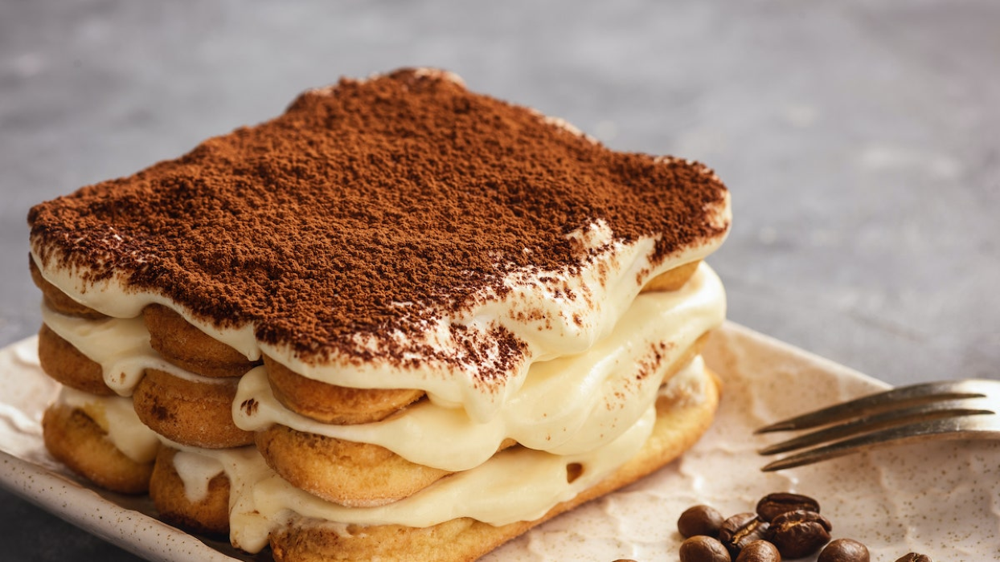

Postres Dulces!
Aqui estan los postres dulces mas populares
Tiramisu
Este postre es nuestra especialidad!
Instrucciones para la preparacion:
Paso 1:Emulsionar las yemas a baño María, batir las yemas y sumar el azúcar y el cognac, batir por 5 minutos. Retirar del fuego y batir hasta enfríar a temperature ambiente. Va a cremar.
Paso 2:Si no tenemos mascarpone, mezclar los dos quesos con batidor a temperature ambiente.
Paso 3:Volcar las yemas al batido de quesos e integrar con movimientos envolventes. Sumar la crema semibatida a la mezcla e integrar nuevamente con movimientos envolventes en 2 o 3 veces.
Paso 4:Hacer el café amargo y mezclar con el azúcar y el licor. Hidratar las vainillas en el café tibio.
Paso 5:Hacer una base de vainillas en una fuente. Cubrir con la crema. Volver a hacer otra capa de vainillas y cubrir nuevamente con vainillas. Espolvorear con chocolate picado y cacao amargo.
Ingredientes necesarios:
- Cognac 1 medida
- Yema 8
- Azúcar 160 grs
- Café 2 tasas
- Crema de leche 400 grs
- Queso mascarpone 600 grs
- Cacao amargo c/n
Chocotorta
Ingredientes necesarios:
- Dulce de leche 400gr
- Queso crema 400gr
- Galletitas de chocolate
- Leche o café
Instrucciones para la preparacion:
Paso 1:Mezclar el dulce de leche junto al queso crema
Paso 2:Buscar una fuente y, remojar las galletitas en leche o cafe, luego poner primer piso de galletitas
Paso 3:Colocar la mezcla por encima de las galletitas y sucesivamente poner el siguiente piso de galletitas
Paso 4:Una vez terminada, dejare enfriar en el congelador